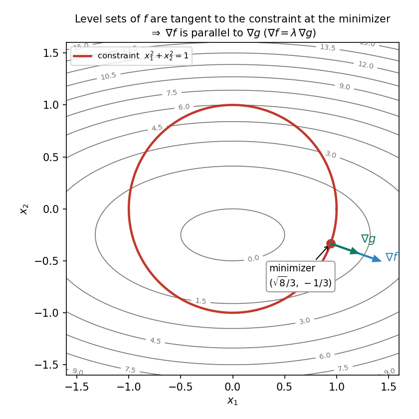

11. Constrained optimization: Lagrange multipliers, projected gradient descent
11.1 The problem: minimize, with strings attached
Chapter 10 solved \(\min_{\mathbf{x} \in \mathbb{R}^d} f(\mathbf{x})\) with no restrictions. Now the constraints return — the cow and the grass from the lectures (§10.1):
eg 1 — the cow and the grass (the setup). A cow stands at \(\mathbf{x} = (x_1, x_2)\) and wants the grass patch at \((40, 40)\): \[f(\mathbf{x}) = (x_1 - 40)^2 + (x_2 - 40)^2.\] The cow is tied by a rope of length \(R\) to a peg at the origin — it cannot roam further than \(R\) from the peg: \[g(\mathbf{x}) = x_1^2 + x_2^2 - R^2 \le 0.\] The full problem is \[\min_{\mathbf{x} \in \mathbb{R}^2} f(\mathbf{x}) \quad \text{subject to} \quad g(\mathbf{x}) \le 0.\]
Def. The constrained optimization problem = \[\min_{\mathbf{x} \in \mathbb{R}^d} f(\mathbf{x}) \quad \text{subject to} \quad \begin{cases} h_i(\mathbf{x}) = 0, & i = 1, \dots, m, \\ g_j(\mathbf{x}) \le 0, & j = 1, \dots, p, \end{cases}\] where the \(h_i\) are equality constraints and the \(g_j\) are inequality constraints. The feasible set is \[S = \{\mathbf{x} : h_i(\mathbf{x}) = 0 \text{ all } i,\; g_j(\mathbf{x}) \le 0 \text{ all } j\}\] — the points the cow is allowed to stand on. An inequality \(g_j(\mathbf{x}) \le 0\) is active (binding) at \(\mathbf{x}\) if \(g_j(\mathbf{x}) = 0\) (the rope is taut), and inactive if \(g_j(\mathbf{x}) < 0\) (there is slack).
- If the unconstrained best point lies inside \(S\), the constraint changes nothing: minimize as in Chapter 10.
- If it lies outside \(S\), the optimum sits on the boundary of \(S\) — the cow pulls the rope taut.
Basically, … Same hill as before, but now there is a fence. You still want the lowest point, except you are only allowed to stand inside the fence. If the valley bottom happens to be inside the fence, great — nothing changes. If it is outside, you end up pressed against the fence at the closest reachable spot.
11.2 The optimality check: no descent direction is feasible
Before computing anything, the lectures ask a sharper question: if someone claims a point \(\mathbf{x}^\star\) is optimal, how do you catch them lying?
- First check: is \(\mathbf{x}^\star\) even feasible? If \(g(\mathbf{x}^\star) > 0\), the claim is bogus.
- Second check: could you improve? A descent direction is a direction that lowers \(f\) — from the Taylor series (§10.6), any \(\mathbf{d}\) with \(\mathbf{d}^T \nabla f(\mathbf{x}^\star) < 0\) is a descent direction for small enough steps. A feasible direction is a direction in which a small step keeps the constraint satisfied.
Key condition. If \(\mathbf{x}^\star\) is optimal, then no descent direction is feasible: if some direction both reduced \(f\) and stayed inside \(S\), you could move there and beat \(\mathbf{x}^\star\) — contradicting optimality.
Now apply this at \(\mathbf{x}^\star\) with one inequality constraint \(g(\mathbf{x}) \le 0\). The descent directions for \(f\) are the half-space \(\mathbf{d}^T \nabla f(\mathbf{x}^\star) < 0\). What about feasible directions? If \(g\) decreases along \(\mathbf{d}\) (\(\mathbf{d}^T \nabla g(\mathbf{x}^\star) < 0\)), the step stays feasible — so the half-space \(\mathbf{d}^T \nabla g(\mathbf{x}^\star) < 0\) is certainly feasible.
So: when do these two half-spaces overlap? If \(\nabla f(\mathbf{x}^\star)\) and \(\nabla g(\mathbf{x}^\star)\) point in unrelated directions, the two half-spaces intersect — there is a direction that is both descent and feasible, and \(\mathbf{x}^\star\) cannot be optimal. If they point in the same direction, it is even worse: every descent direction is feasible. The only configuration with no overlap is when the two gradients point in opposite directions:
\[\boxed{\nabla f(\mathbf{x}^\star) = -\lambda\, \nabla g(\mathbf{x}^\star), \quad \lambda > 0}\]
for some positive scalar \(\lambda\). This is a necessary condition for optimality (not sufficient — it also holds at maxima, as we will see). The scalar \(\lambda\) is the Lagrange multiplier.
Note: \(\lambda > 0\) here, not just any scalar — the gradients must be anti-parallel. The sign matters for inequalities, and §11.7 explains why.
11.3 The Lagrangian and the first-order conditions (equality constraints)
For an equality constraint \(h(\mathbf{x}) = 0\), the same argument runs, with one difference: feasibility to first order means \(\mathbf{d}^T \nabla h(\mathbf{x}^\star) = 0\) — the feasible directions form a line, not a half-space. Both the parallel and the anti-parallel configurations avoid overlap with the descent half-space. So \(\lambda\) gets no sign restriction:
\[\boxed{\nabla f(\mathbf{x}^\star) = -\lambda\, \nabla h(\mathbf{x}^\star), \quad h(\mathbf{x}^\star) = 0, \quad \lambda \text{ any real number.}}\]
Def. For \(\min f(\mathbf{x})\) subject to \(h(\mathbf{x}) = 0\), the Lagrangian is \[\boxed{L(\mathbf{x}, \lambda) = f(\mathbf{x}) - \lambda\, h(\mathbf{x})}.\] Setting its \(\mathbf{x}\)-derivative to zero gives \(\nabla f(\mathbf{x}) - \lambda \nabla h(\mathbf{x}) = \mathbf{0}\), i.e. \(\nabla f(\mathbf{x}^\star) = \lambda\, \nabla h(\mathbf{x}^\star)\) — the same condition as above, since \(\lambda\) ranges over all of \(\mathbb{R}\) in both forms.
Note (sign convention): The lectures write the condition as \(\nabla f(\mathbf{x}^\star) = -\lambda\, \nabla g(\mathbf{x}^\star)\). The Lagrangian form \(L = f - \lambda h\) gives \(\nabla f = \lambda \nabla h\). These are the same condition: rename \(\lambda \to -\lambda\) (an unrestricted multiplier absorbs the sign). Other textbooks write \(L = f + \lambda h\); only consistency matters, not the sign.
The recipe — the method of Lagrange multipliers:
- Write \(L(\mathbf{x}, \lambda) = f(\mathbf{x}) - \lambda h(\mathbf{x})\).
- Solve the system \(\nabla_{\mathbf{x}} L = \mathbf{0}\) and \(h(\mathbf{x}) = 0\) — that is, \(\nabla f = \lambda \nabla h\) together with the constraint.
- The solutions are candidates: plug each into \(f\) and pick the smallest (the conditions are necessary, not sufficient — a candidate can be a maximizer, as eg 3 will show).
Basically, … At the optimum, the hill’s steepest-ascent arrow and the constraint’s steepest-ascent arrow must point along the same line (parallel or anti-parallel). Why: if they pointed in different directions, you could slide along the constraint in a direction that also goes downhill on the objective — and then you wouldn’t be at the optimum. The multiplier \(\lambda\) just measures the ratio of the two arrows’ lengths.
11.4 eg 2 — warm-up: closest point on a line (full steps)
Minimize \(f(x, y) = x^2 + y^2\) subject to \(x + y = 1\).
- Constraint: \(h(x, y) = x + y - 1 = 0\). Lagrangian: \[L(x, y, \lambda) = x^2 + y^2 - \lambda(x + y - 1).\]
- Stationarity: \(\frac{\partial L}{\partial x} = 2x - \lambda = 0\), \(\frac{\partial L}{\partial y} = 2y - \lambda = 0\) — so \(x = y = \lambda/2\).
- Feasibility: \(x + y = 1\) gives \(\lambda/2 + \lambda/2 = 1\), so \(\lambda = 1\), \(x = y = \tfrac{1}{2}\).
- Value: \(f(\tfrac{1}{2}, \tfrac{1}{2}) = \tfrac{1}{4} + \tfrac{1}{4} = \tfrac{1}{2}\). Check: \(\nabla f = (1, 1) = 1 \cdot (1, 1) = \lambda \nabla h\). ✓
Only one candidate, and \(f \to \infty\) at infinity along the line, so this is the global minimum: the point on the line \(x + y = 1\) closest to the origin.
11.5 eg 3 — the lecture’s example: on the unit circle (full steps)
Minimize \(f(x_1, x_2) = x_1^2 + 2x_2 + 4x_2^2\) subject to \(g(x_1, x_2) = x_1^2 + x_2^2 - 1 = 0\).
- Lagrangian: \(L(x_1, x_2, \lambda) = x_1^2 + 2x_2 + 4x_2^2 - \lambda(x_1^2 + x_2^2 - 1)\).
- Lagrange equations (\(\nabla f = \lambda \nabla g\)): \[\begin{cases} 2x_1 = \lambda \cdot 2x_1, \\ 2 + 8x_2 = \lambda \cdot 2x_2, \end{cases} \qquad x_1^2 + x_2^2 = 1.\]
- First equation: \(2x_1(1 - \lambda) = 0\) — so either \(x_1 = 0\) or \(\lambda = 1\).
- Case \(\lambda = 1\). Second equation: \(2 + 8x_2 = 2x_2\), so \(6x_2 = -2\), \(x_2 = -\tfrac{1}{3}\). From the circle: \(x_1^2 = 1 - \tfrac{1}{9} = \tfrac{8}{9}\), \(x_1 = \pm \tfrac{\sqrt{8}}{3}\). Two candidates: \((\tfrac{\sqrt{8}}{3}, -\tfrac{1}{3})\) and \((-\tfrac{\sqrt{8}}{3}, -\tfrac{1}{3})\).
- Case \(x_1 = 0\). From the circle: \(x_2 = \pm 1\). Two candidates: \((0, 1)\) and \((0, -1)\).
- Plug all four into \(f\): \[\begin{aligned} f(0, 1) &= 0 + 2 + 4 = 6, \\ f(0, -1) &= 0 - 2 + 4 = 2, \\ f(\pm \tfrac{\sqrt{8}}{3}, -\tfrac{1}{3}) &= \tfrac{8}{9} - \tfrac{2}{3} + \tfrac{4}{9} = \tfrac{12}{9} - \tfrac{6}{9} = \tfrac{2}{3}. \end{aligned}\]
- The minimum \(\tfrac{2}{3}\) is attained at the two points \((\pm \tfrac{\sqrt{8}}{3}, -\tfrac{1}{3})\) — the minimizers. \((0, 1)\) with value \(6\) is the global maximizer, and \((0, -1)\) with value \(2\) is a local maximizer along the circle: moving either way round the circle from \((0,-1)\) decreases \(f\) toward \(\tfrac{2}{3}\) (check: with \(x_1 = \cos\theta\), \(x_2 = \sin\theta\), \(\frac{d^2f}{d\theta^2} = -4 < 0\) at \(\theta = -\pi/2\)).
Note: This is why step iii) of the recipe says candidates: the Lagrange equations alone found the maximum and the saddle too. The equations are necessary, not sufficient — the final plug-in decides.
11.6 The geometry: level sets tangent, gradients parallel
Here is the picture behind everything above, and it comes straight from Chapter 9. From §9.5: the gradient is perpendicular to the level sets. Now:
- The constraint \(h(\mathbf{x}) = 0\) is itself a level set — of \(h\). So \(\nabla h(\mathbf{x}^\star)\) is perpendicular to the constraint curve at \(\mathbf{x}^\star\).
- At the optimum, the level set of \(f\) through \(\mathbf{x}^\star\) must be tangent to the constraint curve: if it crossed the constraint transversally, moving along the constraint would change \(f\) — and one direction would decrease it, contradicting optimality.
- Two tangent curves share a tangent line, hence share a perpendicular direction — so \(\nabla f(\mathbf{x}^\star)\) and \(\nabla h(\mathbf{x}^\star)\) are parallel. That is exactly \(\nabla f = \lambda \nabla h\).

Basically, … Draw the contour lines of the objective and the constraint curve on the same map. At the best feasible point, the contour line just kisses the constraint curve (tangent) — it can’t cut through it, because cutting through would mean you could slide along the constraint to a lower contour. Tangent curves have parallel normal arrows, and those arrows are the gradients. That’s the whole method in one picture.
11.7 Inequality constraints: active or not, and complementary slackness
Now \(g(\mathbf{x}) \le 0\). The lectures’ treatment stays at one key idea: at the optimum, each inequality constraint is either doing something or nothing.
- Inactive: \(g(\mathbf{x}^\star) < 0\). The constraint is slack — locally you can move freely — so the problem behaves like the unconstrained one: \(\nabla f(\mathbf{x}^\star) = \mathbf{0}\).
- Active: \(g(\mathbf{x}^\star) = 0\). The rope is taut; treat it as an equality: \(\nabla f(\mathbf{x}^\star) = -\lambda\, \nabla g(\mathbf{x}^\star)\) with \(\lambda \ge 0\) (anti-parallel — the §11.2 picture: only the anti-parallel configuration leaves no descent direction feasible).
One line captures both cases — complementary slackness: \[\boxed{\lambda \cdot g(\mathbf{x}^\star) = 0, \qquad \lambda \ge 0}\] either the constraint binds (\(g(\mathbf{x}^\star) = 0\)) or the multiplier vanishes (\(\lambda = 0\); the constraint might as well not exist).
eg 4 — inactive constraint (full steps). Minimize \(f(x, y) = x^2 + y^2\) subject to \(x + y \le 1\).
- The unconstrained minimum is \((0, 0)\), and \(g(0, 0) = 0 + 0 - 1 = -1 < 0\) — feasible with slack.
- Nothing to do: \(\mathbf{x}^\star = (0, 0)\), \(f = 0\) (and \(f \ge 0\) everywhere). \(\lambda = 0\), and \(\lambda \cdot g = 0 \cdot (-1) = 0\). ✓
eg 5 — active constraint (full steps). Minimize \(f(x, y) = x^2 + y^2\) subject to \(x + y \le -1\).
- The unconstrained minimum \((0, 0)\) gives \(g(0, 0) = 1 > 0\) — infeasible. The constraint must be active.
- Solve as equality, \(h(x, y) = x + y + 1 = 0\): \(\nabla f = (2x, 2y) = -\lambda(1, 1) = -\lambda \nabla g\).
- So \(2x = -\lambda\), \(2y = -\lambda\) — \(x = y = -\lambda/2\). With \(x + y = -1\): \(-\lambda = -1\), \(\lambda = 1 \ge 0\) ✓ (anti-parallel, as required).
- \(\mathbf{x}^\star = (-\tfrac{1}{2}, -\tfrac{1}{2})\), \(f = \tfrac{1}{2}\). Check anti-parallelism: \(\nabla f = (-1, -1)\), \(\nabla g = (1, 1)\) — opposite directions. ✓
Note: For equalities \(\lambda\) could be anything; for inequalities \(\lambda \ge 0\) is load-bearing: it filters maximizers out of the candidate list. Problem 7 shows this directly — the equality problem there has two stationary points, and the sign condition rejects the one with \(\lambda < 0\). The full version of these conditions (with several constraints and the Lagrangian) is the Karush–Kuhn–Tucker theory — Chapter 13.
Basically, … An inequality constraint is a rope, not a rail: it only pushes back when taut. At the optimum, either the rope is slack (then ignore it — you’re at an ordinary unconstrained minimum) or it’s taut (then solve it like an equality, with the extra rule that the multiplier can’t be negative). “Complementary slackness” is just this sentence in algebra: \(\lambda \cdot g = 0\) means at least one of the two is zero.
11.8 Projected gradient descent: step, then snap back
Lagrange multipliers solve the equations analytically — but in general those equations are unsolvable (eg 2 of §10.2’s warning applies here too). What we want is an iterative method, in the spirit of Chapter 10. The problem with plain gradient descent: the step \[\mathbf{x}_{t+1} = \mathbf{x}_t - \eta_t \nabla f(\mathbf{x}_t)\] can land outside the feasible set \(S\), and tuning \(\eta_t\) to always stay inside is hopeless in general.
The fix is almost embarrassingly simple: take the gradient step anyway, then project back onto \(S\) — move to the closest feasible point.
Def. The projection of \(\mathbf{z}\) onto a set \(S\) is the closest point of \(S\): \[\boxed{\Pi_S(\mathbf{z}) = \arg\min_{\mathbf{y} \in S} \lVert \mathbf{z} - \mathbf{y} \rVert^2.}\] For simple sets it has a closed form: \(\Pi_{(-\infty, a]}(z) = \min(z, a)\) (snap down to \(a\)), \(\Pi_{[0, \infty)}(z) = \max(z, 0)\) (snap up to \(0\)), \(\Pi_{\text{unit ball}}(\mathbf{z}) = \mathbf{z} / \max(1, \lVert\mathbf{z}\rVert)\) (shrink to the ball).
Def. Projected gradient descent = \[\boxed{\mathbf{x}_{t+1} = \Pi_S\big(\mathbf{x}_t - \eta_t \nabla f(\mathbf{x}_t)\big)} \qquad \text{(gradient step, then projection step).}\] Every iterate stays in \(S\) by construction — the projection guarantees it.
eg 6 — projected GD by hand (full steps). Minimize \(f(x) = (x - 5)^2\) subject to \(x \le 2\). (The unconstrained minimum \(x = 5\) is infeasible; the constrained optimum is \(x^\star = 2\), the closest feasible point to \(5\).)
Take \(\eta = 0.1\), \(x_0 = 0\). Projection: \(\Pi_S(z) = \min(z, 2)\).
- Gradient step: \(x_t - 0.1 \cdot 2(x_t - 5) = 0.8 x_t + 1\). Then snap: \(x_{t+1} = \min(0.8 x_t + 1,\, 2)\).
- \(x_1 = \min(0.8 \cdot 0 + 1,\, 2) = 1\). \(f\): \(25 \to 16\).
- \(x_2 = \min(0.8 \cdot 1 + 1,\, 2) = 1.8\). \(f\): \(16 \to 10.24\).
- \(x_3 = \min(0.8 \cdot 1.8 + 1,\, 2) = \min(2.44,\, 2) = 2\). \(f = 9\).
- \(x_4 = \min(0.8 \cdot 2 + 1,\, 2) = \min(2.6,\, 2) = 2\). Frozen at the optimum.
Note: Without the projection, step iv) would have gone to \(2.44\) — infeasible — and kept marching toward \(5\). The projection is what holds the iterates inside the fence.
The catch (from the lectures). The method is only as good as the projection:
- You must be able to compute \(\Pi_S\) efficiently — for messy sets, the projection itself can be as hard as the original problem.
- Convergence to the true optimum is guaranteed when the constraint set is nice — specifically, when \(S\) is convex (Chapter 12 defines this). If \(f\) is also nice (convex), the method even converges fast.
Basically, … Projected gradient descent is gradient descent with a bouncer. You take your usual downhill step; if you stepped outside the allowed region, the bouncer (the projection) drags you back to the nearest allowed point. It works great when the allowed region is a “nice” shape (convex — next chapter) and the projection is cheap to compute.
11.9 Why ML cares
Constrained problems are everywhere once you look:
- Regularization as a constraint. Training with a weight budget, \(\min L(\mathbf{w})\) subject to \(\lVert\mathbf{w}\rVert \le R\), is the constrained form of penalized training — the penalty version of Chapter 28 is its close cousin. Projected gradient descent on the norm ball is literally “take a step, then shrink the weights back into the ball”.
- SVMs (Chapters 32–33). The support vector machine is posed as a constrained optimization problem (maximize the margin subject to classification constraints) — and it is solved through the Lagrangian machinery of this chapter, pushed all the way to duality in Chapter 13.
- Any time parameters must live somewhere specific — probabilities summing to \(1\), non-negative weights, bounded weights — this chapter’s tools apply.
11.10 Where this goes next
- Chapter 12 (convexity): the “nice” sets and functions this chapter kept gesturing at — convex sets make projected gradient descent converge; convex functions make every local minimum global.
- Chapter 13 (duality and KKT): the full Karush–Kuhn–Tucker conditions for many constraints, and the dual problem — the machinery that actually solves SVMs.
- Chapter 28 (regularization): the penalty view of the weight-budget constraint of §11.9.
- Chapters 32–33 (SVMs): the payoff — a real ML model built on Lagrange multipliers.
Problem set
- Starting from \(L(\mathbf{x}, \lambda) = f(\mathbf{x}) - \lambda h(\mathbf{x})\), derive the two first-order conditions for \(\min f(\mathbf{x})\) s.t. \(h(\mathbf{x}) = 0\). Explain in one line why this is the same condition as the lectures’ \(\nabla f(\mathbf{x}^\star) = -\lambda \nabla h(\mathbf{x}^\star)\).
- Minimize \(f(x, y) = (x - 3)^2 + (y - 4)^2\) subject to \(x + y = 3\) by Lagrange multipliers. (Hint: geometrically this is the closest point on the line to \((3, 4)\) — use that to check your answer and its value.)
- A rectangular box without a lid is to be made from \(12\,\text{m}^2\) of cardboard. Maximize the volume \(f(x, y, z) = xyz\) subject to \(2xz + 2yz + xy = 12\), \(x, y, z > 0\). (Hint: multiply the three Lagrange equations by \(x\), \(y\), \(z\) respectively and compare.)
- Minimize \(f(x, y) = x^2 + xy + y^2\) subject to \(x^2 + y^2 = 1\). Find all stationary points from the Lagrange system, evaluate \(f\) at each, and identify the minimizers and maximizers.
- Minimize \(f(x, y) = x^2 + y^2\) subject to \(x + y \le 1\). Is the constraint active or inactive at the optimum? Verify complementary slackness.
- Minimize \(f(x, y) = x^2 + y^2\) subject to \(x + y \le -1\). Solve with the constraint active, find \(\lambda\), and verify \(\lambda \ge 0\) and that \(\nabla f\) and \(\nabla g\) are anti-parallel at the optimum.
- Minimize \(f(x, y) = (x - 2)^2 + (y - 2)^2\) subject to \(x^2 + y^2 \le 1\). (a) Show the unconstrained minimum is infeasible, so the constraint is active. (b) Find both stationary points of the equality problem and their multipliers; use the sign condition \(\lambda \ge 0\) to pick the minimizer.
- Run three projected-gradient-descent iterations for \(\min f(x) = (x - 4)^2\) subject to \(x \le 1\), from \(x_0 = 0\) with constant \(\eta = 0.25\). What is the constrained optimum, and do the iterates reach it?
- For \(\min f(x) = (x - 5)^2\) subject to \(x \le 2\) with \(\eta = 0.1\), \(x_0 = 0\): (a) compute \(x_1, x_2, x_3\) of plain gradient descent (no projection) and show \(x_3\) is infeasible; (b) apply one projection step to \(x_2\)’s successor and compare with eg 6.
- Minimize \(x^2 + y^2 + z^2\) subject to the two constraints \(x + y + z = 1\) and \(x - y = 0\), using one multiplier per constraint. Interpret the optimum geometrically.
- Explain, with the §11.2 half-space picture, why an equality constraint allows \(\lambda\) of either sign while an inequality constraint \(g(\mathbf{x}) \le 0\) forces \(\lambda \ge 0\). (Hint: for the equality, the feasible directions form the line \(\mathbf{d}^T \nabla h = 0\); for the inequality, the half-space \(\mathbf{d}^T \nabla g < 0\).)
Solutions
Attempt each problem first, then click a problem to reveal its worked solution.
- \(\nabla_{\mathbf{x}} L = \nabla f(\mathbf{x}) - \lambda \nabla h(\mathbf{x}) = \mathbf{0}\), i.e. \(\nabla f(\mathbf{x}^\star) = \lambda\, \nabla h(\mathbf{x}^\star)\).
- \(\frac{\partial L}{\partial \lambda} = -h(\mathbf{x}) = 0\), i.e. \(h(\mathbf{x}^\star) = 0\).
One line: the lectures write \(\nabla f = -\lambda \nabla h\) with \(\lambda\) unrestricted, and since \(\lambda\) ranges over all of \(\mathbb{R}\), renaming \(\lambda \to -\lambda\) turns one form into the other — they are the same condition.
- \(2(x - 3) - \lambda = 0\), \(2(y - 4) - \lambda = 0\) — so \(2(x-3) = 2(y-4)\), i.e. \(y = x + 1\).
- Constraint: \(x + (x + 1) = 3\) — \(x = 1\), \(y = 2\), \(\lambda = 2(1-3) = -4\).
- Value: \(f(1, 2) = 4 + 4 = 8\). Single candidate; \(f \to \infty\) at infinity along the line — the global minimum.
Check: distance from \((3,4)\) to the line \(x + y - 3 = 0\) is \(\frac{|3 + 4 - 3|}{\sqrt{2}} = \frac{4}{\sqrt{2}} = 2\sqrt{2}\); squared distance \(= 8\). ✓ Also \(\nabla f(1,2) = (-4, -4) = -4(1,1) = \lambda \nabla h\). ✓
- \(\nabla f = (yz, xz, xy)\), \(\nabla g = (2z + y, 2z + x, 2x + 2y)\). Equations: \[yz = -\lambda(2z + y), \qquad xz = -\lambda(2z + x), \qquad xy = -\lambda(2x + 2y).\] (The sign of \(\lambda\) is free for an equality; \(-\lambda\) versus \(\lambda\) makes no difference.)
- Multiply by \(x\), \(y\), \(z\) respectively: \[xyz = -\lambda(2xz + xy) = -\lambda(2yz + xy) = -\lambda(2xz + 2yz).\]
- Since \(xyz > 0\) (nonzero volume, positive sides): from the first two, \(2xz + xy = 2yz + xy\) — \(2xz = 2yz\) — \(x = y\). From the second and third, \(2yz + xy = 2xz + 2yz\) — \(xy = 2xz\) — \(y = 2z\). So \(x = y = 2z\).
- Constraint: \(2xz + 2yz + xy = 2(2z)(z) + 2(2z)(z) + (2z)(2z) = 12z^2 = 12\) — \(z = 1\) (positive root), \((x, y, z) = (2, 2, 1)\).
- Volume: \(f = 2 \cdot 2 \cdot 1 = 4\,\text{m}^3\), the maximum (boundary cases with a zero side give volume \(0\)).
- \((2 - 2\lambda)x + y = 0\), \(x + (2 - 2\lambda)y = 0\). Put \(\mu = 2 - 2\lambda\): \(\mu x + y = 0\), \(x + \mu y = 0\).
- \(y = -\mu x\) into the second: \(x - \mu^2 x = x(1 - \mu^2) = 0\). \(x = 0\) forces \(y = 0\) (infeasible), so \(\mu = \pm 1\).
- \(\mu = 1\): \(y = -x\); circle gives \(2x^2 = 1\) — \((\tfrac{1}{\sqrt{2}}, -\tfrac{1}{\sqrt{2}})\), \((-\tfrac{1}{\sqrt{2}}, \tfrac{1}{\sqrt{2}})\). \(f = \tfrac{1}{2} - \tfrac{1}{2} + \tfrac{1}{2} = \tfrac{1}{2}\) at both — the minimizers.
- \(\mu = -1\): \(y = x\); \(x = \pm \tfrac{1}{\sqrt{2}}\) — \((\tfrac{1}{\sqrt{2}}, \tfrac{1}{\sqrt{2}})\), \((-\tfrac{1}{\sqrt{2}}, -\tfrac{1}{\sqrt{2}})\). \(f = \tfrac{1}{2} + \tfrac{1}{2} + \tfrac{1}{2} = \tfrac{3}{2}\) at both — the maximizers.
- \(\nabla f = (2x, 2y) = -\lambda(1,1) = -\lambda \nabla g\) — so \(2x = -\lambda\), \(2y = -\lambda\), \(x = y = -\lambda/2\).
- \(x + y = -1\) gives \(-\lambda = -1\) — \(\lambda = 1 \ge 0\). ✓
- \(\mathbf{x}^\star = (-\tfrac{1}{2}, -\tfrac{1}{2})\), \(f = \tfrac{1}{2}\). Anti-parallel check: \(\nabla f(-\tfrac{1}{2},-\tfrac{1}{2}) = (-1,-1)\), \(\nabla g = (1,1)\) — opposite directions. ✓ Complementary slackness: \(g(\mathbf{x}^\star) = 0\). ✓
Unconstrained minimum: \(\nabla f = (2(x-2), 2(y-2)) = \mathbf{0}\) — \((2,2)\). \(g(2,2) = 8 - 1 = 7 > 0\) — infeasible. So the constraint is active.
Equality problem \(x^2 + y^2 = 1\), lecture form \(\nabla f = -\lambda \nabla g\): \[2(x - 2) = -\lambda \cdot 2x, \qquad 2(y - 2) = -\lambda \cdot 2y.\] So \(x(1 + \lambda) = 2\), \(y(1 + \lambda) = 2\) — \(x = y = \tfrac{2}{1+\lambda}\). Circle: \(2x^2 = 1\) — \(x = \pm \tfrac{1}{\sqrt{2}}\).
- \(x = y = \tfrac{1}{\sqrt{2}}\): \(\tfrac{1}{\sqrt{2}}(1 + \lambda) = 2\) — \(\lambda = 2\sqrt{2} - 1 \approx 1.83 \ge 0\). ✓ Minimizer. Value: \(f = 2(\tfrac{1}{\sqrt{2}} - 2)^2 = 2(\tfrac{9}{2} - 2\sqrt{2}) = 9 - 4\sqrt{2} \approx 3.34\).
- \(x = y = -\tfrac{1}{\sqrt{2}}\): \(\lambda = 1 - 2\sqrt{2} \approx -1.83 < 0\) — fails the sign condition: the maximizer. Value: \(9 + 4\sqrt{2} \approx 14.66\).
The \(\lambda \ge 0\) rule picks the minimizer and rejects the maximizer.
- \(x_1 = \min(0.5 \cdot 0 + 2,\, 1) = \min(2, 1) = 1\).
- \(x_2 = \min(0.5 \cdot 1 + 2,\, 1) = \min(2.5, 1) = 1\).
- \(x_3 = 1\).
Constrained optimum: the closest point of \((-\infty, 1]\) to \(4\) is \(x^\star = 1\), \(f = 9\) — the iterates reach it in one step and stay.
Plain GD: \(x_{t+1} = x_t - 0.2(x_t - 5) = 0.8x_t + 1\). \(x_1 = 1\), \(x_2 = 0.8 + 1 = 1.8\), \(x_3 = 1.44 + 1 = 2.44\). \(2.44 > 2\) — infeasible; plain GD leaves the feasible set on the third step (and would keep marching to \(5\)).
Projecting \(x_3\): \(\min(2.44, 2) = 2\) — exactly eg 6’s \(x_3\). With projection every step, the iterates are \(0 \to 1 \to 1.8 \to 2 \to 2\), frozen at the constrained optimum \(x^\star = 2\).
- \(2x = \lambda_1 + \lambda_2\), \(2y = \lambda_1 - \lambda_2\), \(2z = \lambda_1\).
- Constraint \(x - y = 0\) gives \(x = y\), so \(\lambda_2 = 0\) and \(x = z = \lambda_1/2\).
- \(x + y + z = 1\) gives \(\tfrac{3\lambda_1}{2} = 1\) — \(\lambda_1 = \tfrac{2}{3}\), \(x = y = z = \tfrac{1}{3}\).
- Value: \(f = 3 \cdot \tfrac{1}{9} = \tfrac{1}{3}\) — the global minimum (single candidate, \(f \to \infty\) at infinity).
Geometrically: the two planes intersect in a line; the optimum is the point of that line closest to the origin, with \(f\) the squared distance.
Inequality \(g(\mathbf{x}) \le 0\): feasible directions include the half-space \(\mathbf{d}^T \nabla g < 0\) — one-sided, not symmetric. Only the anti-parallel configuration (\(\nabla f = -\lambda \nabla g\), \(\lambda > 0\)) points the descent half-space entirely away from the feasible half-space. With \(\lambda < 0\) (parallel), every descent direction would be feasible — the point could be improved, so it cannot be a minimum.